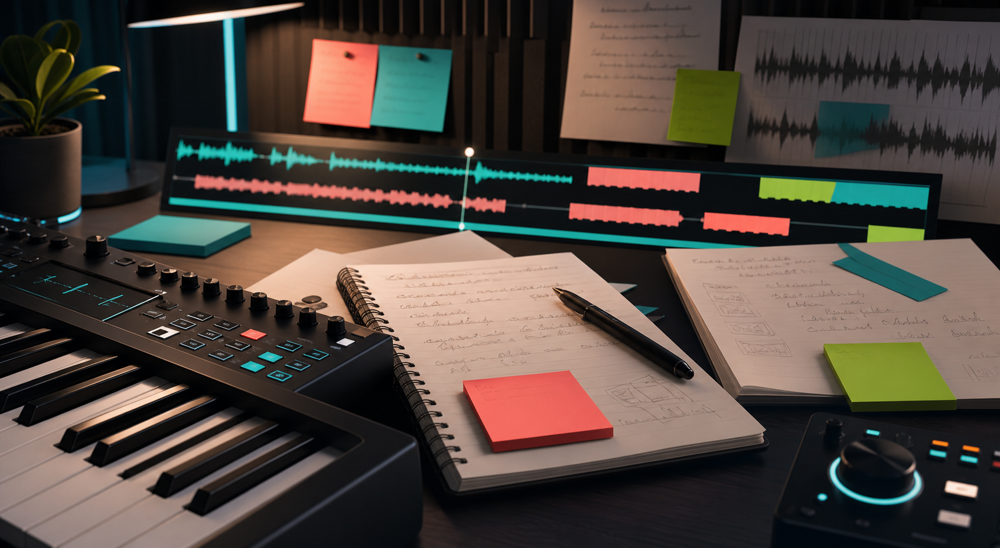

Home
R&B room
Today's mission
Turn one strong loop into a replayable song.
Pick a case study, diagnose your idea, write three hooks, then save the reference moves worth stealing.
Mode map
Choose a lane
Guided studio flow
0/5
Do the next useful thing
Studio queue
Next best moves
Six pillars
Song readiness
Creation room
Loop On
Loop the beat, write the song
Write the phrase the listener should leave with.
Name what the chorus resolves emotionally.
Give each return a new reason to stay.
Take recorder
Ready
Record the sketch
Take time
00:00
Checking transcript support
Arm the mic, play the beat, then catch the melody, flow, or delivery idea before editing it.
Current take
No take loaded
Vocal designer
Take plan
Layering and performance map
No plan yet
Choose a section and performance direction, then design the vocal stack.
No grade yet
Record or paste a transcript, then grade the performance.
Songwriting scribe
Autosaved
Open notebook
Song sparks
Voice sketch
Find the line, then make it sing
Ready
Start with a spark, then bend every word toward your own voice.
Flow deck
0 captures
Catch the take
Genre DNA
Write inside the right rules
How the pros do it
Study methods, not mythology.
Each playbook now starts with guided listening: suggested records, official streaming-player slots, timestamp prompts, and the producer move to steal without copying the artist's context.
Audio-first study.
Use suggested records as the curriculum, then attach official Spotify, Apple Music, SoundCloud, or YouTube players for real-record listening.
Apply it
One-page song blueprint
Creative Risk Lab
Study the records that should not have worked, then learn why they did.
Use these records to separate useful risk from random weirdness: the risk must sharpen the song, reveal the artist, or create a new listening behavior.
Session Greats
The invisible musicians who made records feel expensive, human, and undeniable.
Study the players behind the records: keyboard hooks, bass motion, drum pocket, guitar personality, and percussion color. This module is about learning what elite musicians add before the mix ever starts.
0
players shown
Choose a chair
Filter by musical role.
Studio ecosystems
The rooms behind the records.
Engineer Benchmarks
Translate the song by style, not by generic loudness.
Each style has a different center of gravity. Use these targets to decide what should feel close, wide, bright, heavy, dry, compressed, human, or polished.
Audio Lab
Map the song while it plays
Now playing
No track loaded
0:00 / 0:00
BPM --
AI Song Analyst
Checking API
Transcribe, map, and rate the song
For released commercial songs, analyze structure and short excerpts only. Full lyric transcription should be used for your own work or material you have permission to process.
Record a take in Create, paste your own lyrics, or add a transcript, then run the analyst.
Hook Sprint
Generate pressure-tested hook briefs
Hook bench
Score your options
Plain-English music language
Pick a lane, then learn the language one layer at a time.
Start with core terms, move into sound tools, study the gear, then connect it to producer identity.
0
items loaded
Producer Sound Genome
0 tools
Instruments, machines, plugins, effects, and signature sounds.
Acoustics & Sound Design
0 lessons
Learn why sounds feel close, huge, warm, harsh, expensive, intimate, or tiring.
Gear Heads
See the machines, hear the records, learn the sonic fingerprint.
Signature Sound Map
How producers, labels, rooms, and scenes turn choices into identity.
Reference Vault